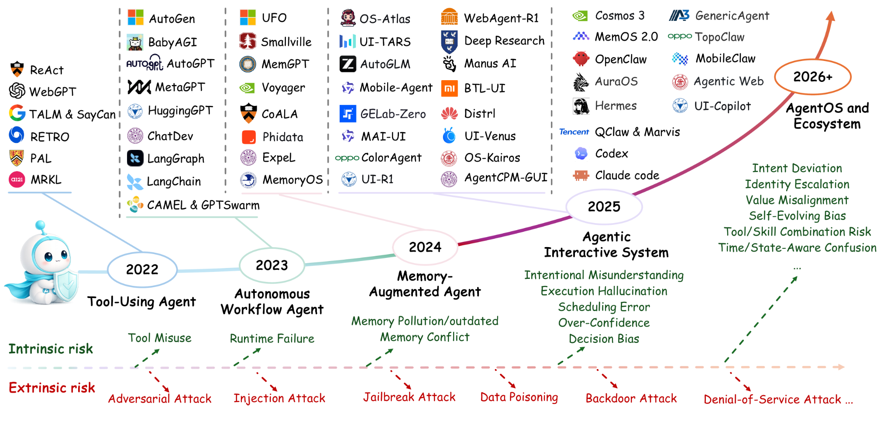

01
Content Safety
Focuses primarily on generated information and whether outputs are incorrect, unsafe, or unauthorized.
OutputResponse
Risks, Attacks, Defenses and Evaluation
1 School of Communication and Information Engineering, Shanghai University, Shanghai, China
2 School of Computer Science, Shanghai Jiao Tong University, Shanghai, China
3 School of Computing, National University of Singapore, Singapore
4 School of Computer Science and Technology, Soochow University, China
5 School of Computer Engineering and Science, Shanghai University, Shanghai, China
† Corresponding author: Pengzhou Cheng
The survey shifts the safety lens from what a model says to what an autonomous agent actually does across long-horizon interaction and execution.
Focuses primarily on generated information and whether outputs are incorrect, unsafe, or unauthorized.
Focuses on whether autonomous agents perform harmful or uncontrolled actions across cognition, execution, environment, and collaboration.
A unified, behavior-centric perspective connects intrinsic cognitive vulnerability, external loss-of-control risk, community safety, system safety, and evaluation.

Current public version: 2026 preprint.
@misc{lai2026behavior,
title = {Behavior Safety of Autonomous Interactive Agents: Risks, Attacks, Defenses and Evaluation},
author = {Lai, Xinjie and Zuo, Weihao and Wu, Zheng and Ju, Tianjie and Zhao, Haodong and Zhang, Xiaofeng and Zhang, Zhuosheng and Liu, Gongshen and Zhang, Xinpeng and Cheng, Pengzhou},
year = {2026},
note = {Preprint}
}